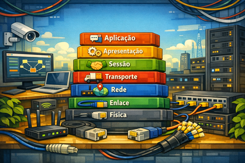

Infraestrutura Física de Redes
AULA 03 — O Modelo OSI

1. Por que Precisamos de um Modelo em Camadas
Para entender o valor do Modelo OSI, é preciso entender o problema que ele veio resolver.
Nos anos 1970, cada fabricante de computadores desenvolvia seus próprios protocolos de comunicação — e esses protocolos eram proprietários e incompatíveis entre si. Um computador da IBM não conseguia se comunicar com um computador da DEC. Um equipamento da Honeywell não entendia o que um equipamento da Burroughs transmitia. Cada empresa tinha seu próprio "idioma" de rede, e esses idiomas não se traduziam.
Para uma empresa que comprava equipamentos de fabricantes diferentes — o que era a regra, não a exceção — isso era um problema grave. Redes corporativas precisavam ser homogêneas para funcionar, o que criava dependência total de um único fornecedor.
A solução conceitual foi dividir o problema de comunicação em partes menores, independentes e padronizadas. Em vez de tentar criar um protocolo único que resolvesse tudo de uma vez, a ideia foi definir camadas — onde cada camada resolve um problema específico e bem delimitado, e cada camada só precisa saber o que a camada abaixo entrega para ela, sem precisar conhecer os detalhes internos de como isso é feito.
Esse princípio tem um nome: abstração. É o mesmo princípio que permite a um motorista dirigir um carro sem precisar entender a combustão interna do motor, ou que permite a você postar uma carta sem precisar saber a rota que o caminhão dos Correios vai percorrer.
Analogia para sala de aula: quando você envia uma carta pelos Correios, você escreve o conteúdo, coloca no envelope, escreve o endereço e deposita na caixa de coleta. Você não precisa saber se a carta vai de caminhão, avião ou moto. Os Correios não precisam saber o que está escrito dentro — só precisam saber para onde entregar. O carteiro não precisa saber como a carta chegou à agência — só precisa entregar na porta certa. Cada parte do sistema resolve seu próprio problema, de forma independente.
2. O que é o Modelo OSI
O Modelo OSI — Open Systems Interconnection — foi publicado em 1984 pela ISO (International Organization for Standardization) como um modelo de referência universal para comunicação entre sistemas computacionais.
É fundamental entender o que o OSI é — e o que ele não é:
O OSI é um modelo de referência, não um protocolo implementável. Ele não descreve como a comunicação deve acontecer em termos de código ou sinal elétrico — ele descreve o que cada parte do sistema de comunicação deve fazer. É um mapa, não uma estrada.
A diferença entre modelo e protocolo: o OSI define que deve existir uma camada responsável pelo roteamento de pacotes entre redes — mas não define qual protocolo faz isso. O IP, o IPX e outros protocolos são implementações possíveis para essa função. O modelo é o conceito; o protocolo é a implementação.
Por que o OSI ainda é ensinado hoje, mesmo sendo o TCP/IP o modelo dominante na prática? Porque o OSI é o melhor instrumento conceitual para entender qualquer tecnologia de rede — passada, presente ou futura. Quando um novo protocolo surge, analistas o descrevem em termos de camadas OSI. Quando um problema de rede ocorre, técnicos o diagnosticam identificando em qual camada OSI ele está acontecendo. O modelo é uma linguagem comum da área.
3. As 7 Camadas — Estrutura Geral
O Modelo OSI divide a comunicação em 7 camadas, numeradas de 1 a 7:
- A camada 1 é a mais próxima do hardware físico
- A camada 7 é a mais próxima do usuário e das aplicações
- Os dados descem as camadas na máquina de origem (da 7 para a 1)
- Os dados sobem as camadas na máquina de destino (da 1 para a 7)
| Camada | Nome | Unidade de dados |
|---|---|---|
| 7 | Aplicação | Dados |
| 6 | Apresentação | Dados |
| 5 | Sessão | Dados |
| 4 | Transporte | Segmento |
| 3 | Rede | Pacote |
| 2 | Enlace de Dados | Quadro (frame) |
| 1 | Física | Bits |
Mnemônico — de baixo para cima (camada 1 → 7):
"Por Favor, Não Tire o Servidor de Aplicação"
Física · Enlace · Rede · Transporte · Sessão · Apresentação · Aplicação
Mnemônico em inglês (útil para leitura de materiais internacionais, de cima para baixo):
"All People Seem To Need Data Processing"
Application · Presentation · Session · Transport · Network · Data Link · Physical
4. Camada 1 — Física
Responsabilidade: transmitir bits brutos pelo meio físico — e apenas isso.
A camada física não interpreta os bits que transmite. Ela não sabe se um bit 1 representa parte de um e-mail, de um vídeo ou de um arquivo. Sua única função é garantir que o bit gerado na origem chegue ao destino como um sinal físico — elétrico, óptico ou de rádio.
O que a camada física define:
- Tensões elétricas que representam 0 e 1 nos cabos de cobre
- Comprimentos de onda de luz que representam 0 e 1 na fibra óptica
- Frequências de rádio usadas na comunicação sem fio
- Timing dos bits — por quanto tempo cada bit dura no meio
- Conectores físicos e sua pinagem — formato, número de pinos, função de cada pino
- Distâncias máximas de transmissão para cada tipo de meio
Exemplos de componentes e tecnologias desta camada: cabos de par trançado (Cat5e, Cat6, Cat6A), fibra óptica monomodo e multimodo, cabo coaxial, conectores RJ-45, hubs, repetidores, sinais Wi-Fi no nível do sinal de rádio.
Problemas típicos da camada 1:
- Cabo fisicamente danificado ou partido
- Conector RJ-45 mal crimpado
- Cabo com comprimento além do limite especificado (100 m para par trançado)
- Interferência eletromagnética de motores, lâmpadas fluorescentes ou outros cabos
- Conector oxidado ou sujo
Relevância direta para este curso: todo o conteúdo prático desta disciplina — cabeamento estruturado, crimpagem, patch panels, tomadas RJ-45, racks, canaletas — vive inteiramente na camada 1. Quando você crimpa um cabo incorretamente, o problema é de camada 1. Quando você excede os 90 metros de cabeamento horizontal permitidos pela norma, o problema é de camada 1.
5. Camada 2 — Enlace de Dados
Responsabilidade: comunicação confiável entre dois dispositivos diretamente conectados — ou seja, no mesmo segmento de rede, sem passar por um roteador.
A camada 2 pega o fluxo de bits entregue pela camada 1 e os organiza em unidades chamadas quadros (frames). Cada quadro tem uma estrutura definida: cabeçalho, dados e trailer de verificação de erros.
O endereço MAC:
A camada 2 introduz o conceito de endereço MAC (Media Access Control) — um
identificador físico único, gravado permanentemente em cada placa de rede pelo fabricante. São 48 bits,
representados em hexadecimal no formato AA:BB:CC:DD:EE:FF. Os primeiros 24 bits identificam
o fabricante; os últimos 24 bits são únicos para aquele equipamento específico.
O endereço MAC não muda — é como o número de série de um produto. Não importa em qual rede o equipamento seja conectado, seu MAC permanece o mesmo.
Outras funções da camada 2:
- Detecção de erros de transmissão usando técnicas como CRC (Cyclic Redundancy Check)
- Controle de acesso ao meio: define quem pode transmitir e quando, evitando colisões — no Ethernet isso é feito pelo protocolo CSMA/CD
- Dupla subcamadas: LLC (Logical Link Control) — controla o fluxo e detecta erros; MAC (Media Access Control) — controla o acesso ao meio físico
Exemplos de tecnologias: Ethernet (IEEE 802.3), Wi-Fi (IEEE 802.11), PPP.
Dispositivo que opera nesta camada: o switch. O switch lê o endereço MAC de destino de cada quadro recebido e o encaminha apenas para a porta onde aquele dispositivo está conectado — diferente do hub (camada 1), que replica o sinal para todas as portas indiscriminadamente. Essa inteligência de camada 2 é o que torna o switch muito mais eficiente que o hub.
6. Camada 3 — Rede
Responsabilidade: roteamento de dados entre redes diferentes — permitindo que um pacote saia da sua rede local e chegue a um servidor do outro lado do mundo.
A camada 3 opera com unidades chamadas pacotes e introduz o conceito de endereço IP — um endereço lógico, configurável por software, que identifica um dispositivo numa rede.
A diferença fundamental entre endereço MAC e endereço IP:
| Endereço MAC | Endereço IP | |
|---|---|---|
| Tipo | Físico | Lógico |
| Gravado por | Fabricante do hardware | Administrador de rede ou DHCP |
| Muda? | Não | Sim — pode mudar a cada conexão |
| Alcance | Rede local (segmento) | Global (internet) |
| Usado por | Switch (camada 2) | Roteador (camada 3) |
Analogia: o endereço MAC é como o nome de uma pessoa — único e permanente. O endereço IP é como o endereço postal dessa pessoa — pode mudar se ela se mudar, mas permite que qualquer carta do mundo chegue até ela.
Funções da camada 3:
- Determinar o melhor caminho (rota) para que o pacote chegue ao destino, mesmo atravessando dezenas de redes intermediárias
- Fragmentar pacotes grandes em partes menores quando necessário
- Identificar redes de origem e destino através dos endereços IP
A camada 3 não garante: entrega, ordem de chegada ou ausência de duplicatas. Ela faz o melhor esforço (best effort) para entregar — a responsabilidade de garantir a entrega é da camada 4.
Exemplos de protocolos: IP (IPv4 e IPv6), ICMP (usado pelo comando ping),
protocolos de roteamento como OSPF e BGP.
Dispositivo que opera nesta camada: o roteador. O roteador lê o endereço IP de destino de cada pacote e decide para qual próximo salto (hop) encaminhá-lo, consultando sua tabela de roteamento.
7. Camada 4 — Transporte
Responsabilidade: comunicação fim a fim entre processos (aplicações) em hosts diferentes — garantindo que os dados cheguem corretamente da aplicação de origem até a aplicação de destino.
A camada 4 opera com unidades chamadas segmentos e introduz o conceito de porta — um número de 16 bits que identifica qual aplicação dentro do computador deve receber os dados.
Exemplos de portas conhecidas:
| Porta | Protocolo | Serviço |
|---|---|---|
| 80 | HTTP | Navegação web |
| 443 | HTTPS | Navegação web segura |
| 22 | SSH | Acesso remoto seguro |
| 25 | SMTP | Envio de e-mail |
| 53 | DNS | Resolução de nomes |
Os dois modos principais de transporte:
TCP — Transmission Control Protocol: orientado à conexão. Antes de transmitir dados, estabelece uma conexão com o destino (handshake de três vias). Garante entrega, ordem e integridade dos dados. Se um segmento se perder, o TCP solicita retransmissão. É mais lento — a confiabilidade tem custo. Usado em: navegação web, e-mail, transferência de arquivos.
UDP — User Datagram Protocol: sem conexão. Envia os dados sem verificar se chegaram. Não garante entrega, ordem ou integridade. É mais rápido — a ausência de controle reduz a latência. Usado em: streaming de vídeo, jogos online, VoIP, DNS. Nesses casos, perder um pacote ocasional é aceitável; atrasar para retransmitir não é.
Outras funções da camada 4:
- Controle de fluxo: ajusta a velocidade de transmissão para não sobrecarregar o receptor
- Controle de congestionamento: detecta e reage ao congestionamento da rede, reduzindo a taxa de envio quando necessário
8. Camada 5 — Sessão
Responsabilidade: estabelecer, gerenciar e encerrar sessões de comunicação entre aplicações.
Uma sessão é uma conversa organizada entre dois processos — com início, meio e fim claramente definidos. A camada 5 garante que essa conversa seja coordenada.
Funções da camada 5:
- Estabelecimento de sessão: negocia os parâmetros da comunicação antes que os dados comecem a fluir
- Sincronização: define pontos de verificação (checkpoints) ao longo da transmissão. Se a comunicação for interrompida, pode ser retomada a partir do último checkpoint — sem precisar recomeçar do zero. Útil em transferências longas de arquivos
- Controle de diálogo: define o modo de comunicação:
- Simplex: um sentido apenas (ex: rádio AM — a emissora fala, o ouvinte escuta)
- Half-duplex: dois sentidos, mas não simultaneamente (ex: rádio comunicador — um fala enquanto o outro escuta, depois invertem)
- Full-duplex: dois sentidos simultaneamente (ex: telefone — os dois podem falar e ouvir ao mesmo tempo)
Na prática moderna: as funções de sessão são frequentemente absorvidas pela camada de aplicação ou pelo TCP. É a camada menos visível do modelo OSI, mas conceitualmente importante para entender como sessões são gerenciadas.
Exemplos: NetBIOS, RPC (Remote Procedure Call), sockets de rede.
9. Camada 6 — Apresentação
Responsabilidade: garantir que os dados sejam apresentados num formato que a aplicação receptora consiga interpretar — independentemente das diferenças internas entre os sistemas.
O problema que a camada 6 resolve é o da representação: sistemas diferentes podem codificar os mesmos dados de formas diferentes. O caractere "A" pode ser representado como 65 em ASCII, como 0x0041 em Unicode UTF-16 ou como 193 em EBCDIC (sistema da IBM). Se os dois lados não concordam sobre a codificação, os dados chegam corrompidos mesmo que a transmissão tenha sido perfeita.
Funções da camada 6:
- Tradução de formato: converte entre diferentes representações de dados, garantindo que o receptor interprete corretamente o que o transmissor enviou.
- Criptografia e descriptografia: protege os dados em trânsito, tornando-os ilegíveis para qualquer interceptador. O protocolo TLS/SSL — que garante o "S" do HTTPS — opera conceitualmente nesta camada.
- Compressão e descompressão: reduz o volume de dados antes da transmissão, aumentando a eficiência. O receptor descomprime ao receber.
Exemplos de formatos e tecnologias associados a esta camada: JPEG (imagens), MP3 (áudio), MP4 (vídeo), PDF (documentos), SSL/TLS (criptografia).
10. Camada 7 — Aplicação
Responsabilidade: fornecer a interface entre a rede e o software utilizado pelo usuário.
É importante esclarecer um equívoco comum: a camada 7 não é o navegador, o cliente de e-mail ou o aplicativo de mensagens. A camada 7 é a camada que fornece os serviços de rede que esses aplicativos usam — define quais operações são possíveis, qual o formato das requisições e respostas, como autenticação funciona.
Exemplos de protocolos da camada 7:
| Protocolo | Função |
|---|---|
| HTTP / HTTPS | Navegação web |
| SMTP / IMAP / POP3 | Envio e recebimento de e-mail |
| FTP / SFTP | Transferência de arquivos |
| DNS | Resolução de nomes de domínio em endereços IP |
| DHCP | Atribuição automática de endereços IP |
| SSH | Acesso remoto seguro a servidores |
É a camada mais próxima do usuário e a mais visível no cotidiano. Quando você digita um endereço no navegador, o HTTP (camada 7) formula a requisição — que então desce todas as camadas até virar bits num cabo (camada 1), atravessa a rede, e sobe todas as camadas no servidor até chegar à aplicação que vai responder.
11. Encapsulamento e Desencapsulamento
O encapsulamento é o processo pelo qual os dados percorrem as camadas do modelo OSI.
Na máquina de origem — encapsulamento (descendo as camadas):
A aplicação gera os dados. Ao passar por cada camada abaixo, um cabeçalho (header) é adicionado — contendo as informações de controle que aquela camada precisa para fazer seu trabalho no destino. O dado cresce a cada camada.
- Camada 7 → [ DADOS ]
- Camada 4 → [ SEG | DADOS ]
- Camada 3 → [ PKT | SEG | DADOS ]
- Camada 2 → [ FRAME | PKT | SEG | DADOS | TRAILER ]
- Camada 1 → 0101001101010010101... (bits no cabo)
Na máquina de destino — desencapsulamento (subindo as camadas):
Cada camada lê e remove o cabeçalho que lhe corresponde, processa as informações de controle e passa o restante para a camada acima. O dado encolhe a cada camada. Quando chega à camada 7, a aplicação recebe apenas os dados originais — sem nenhum dos cabeçalhos adicionados no caminho.
Analogia com envelopes: imagine uma mensagem importante sendo embalada para envio internacional. Você escreve a mensagem (dados), coloca na envelope com o nome do destinatário (camada 4 — transporte), coloca esse envelope numa caixa com o endereço completo (camada 3 — rede), coloca a caixa num container com a etiqueta da transportadora (camada 2 — enlace). No destino, o container é aberto, a caixa retirada, o envelope aberto — e o destinatário recebe apenas a mensagem original.
Os nomes corretos das unidades de dados em cada camada:
| Camada | Unidade |
|---|---|
| 7, 6, 5 | Dados (data) |
| 4 | Segmento |
| 3 | Pacote |
| 2 | Quadro (frame) |
| 1 | Bits |
12. Comunicação Lógica entre Pares de Camadas
Cada camada na máquina de origem se comunica logicamente com a mesma camada na máquina de destino — como se houvesse um canal direto entre elas.
A camada 3 da máquina A "conversa" com a camada 3 da máquina B usando o protocolo IP — mesmo que fisicamente os pacotes passem por dezenas de roteadores e switches intermediários. Cada dispositivo intermediário processa apenas as camadas que lhe são relevantes:
- Um switch recebe o quadro (camada 2), lê o endereço MAC de destino, encaminha pela porta correta e reconstrói o quadro — sem nunca olhar para as camadas 3 a 7.
- Um roteador vai um nível acima: desencapsula até a camada 3, lê o endereço IP, decide a rota, e reencapsula o pacote num novo quadro de camada 2 para o próximo salto.
Essa separação é o que torna possível construir redes complexas com equipamentos de diferentes fabricantes e tecnologias — cada camada faz seu trabalho de forma independente.
13. Por que o OSI Importa para Infraestrutura Física
Toda decisão de infraestrutura física de rede tem uma camada OSI correspondente. Conhecer esse mapeamento é fundamental tanto para projetar redes quanto para diagnosticar problemas.
| Componente / Dispositivo | Camada OSI |
|---|---|
| Cabos, conectores, tomadas RJ-45 | Camada 1 — Física |
| Patch panels, canaletas, racks | Camada 1 — Física |
| Hubs, repetidores | Camada 1 — Física |
| Switches, bridges | Camada 2 — Enlace |
| Roteadores | Camada 3 — Rede |
| Firewalls básicos (filtragem por IP/porta) | Camadas 3 e 4 |
| Firewalls de próxima geração, proxies | Camadas 3 a 7 |
O modelo OSI como ferramenta de diagnóstico:
Quando um problema de rede ocorre, identificar em qual camada ele está acontecendo é o primeiro passo para resolvê-lo — e evita perder tempo procurando a solução no lugar errado.